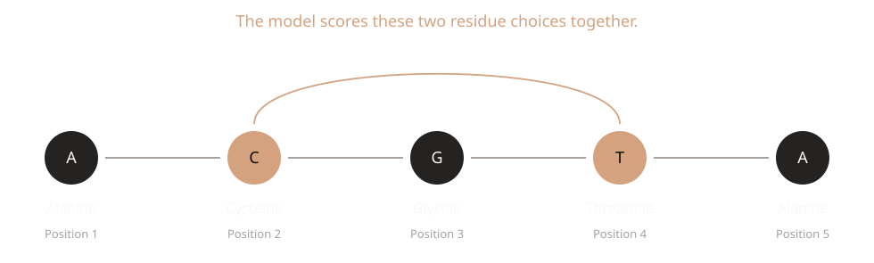

The biological target
We start with a model of chorismate mutase.
Our model has 96 aligned positions, with an allowed set of amino acids at each position.

Choosing cysteine at one position can change which amino acid the model prefers at another.
The model combines these interactions to score the whole sequence.